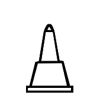
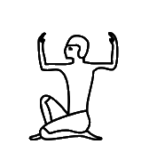
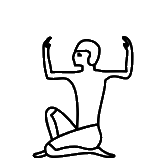

13017
134CD
https://www.unicode.org/L2/L2006/06354-n3181-egyptian.pdf
This database rigorously linked the relevant hieroglyphs either to publications from the Griffith Institute or to the Hieratische Paläographie of Georg Möller. Note that each row lists the exact source as well as the exact location within the source. The sources from the Griffith Institute include Gardiner's grammar, and a number of ancillary documents, which were made publicly available:
https://www.unicode.org/L2/L2005/05313-Gardiner28-57.pdf
Gardiner's grammar provides extensive information about the signs, together with bibliographic references, and also the ancillary documents provide, albeit to varying degrees, information about many additional signs. Some signs are linked to particular inscriptions listed in the Griffith Institute Topographical Bibliography (GITB), which allows these signs to be studied in context.The signs were given Unicode names that were similar to the names used by Gardiner. However, all numbers were padded with zeros to make 3-digit numbers; for example, Gardiner's A1 became A001. One rationale was to avoid any clash with sign names used by disparate sign lists, such as various editions of the Manuel de Codage and Hieroglyphica, and the sign list of the JSesh hieroglyphic editor. A related rationale was to avoid any suggestion that the Unicode signs stood for anything other than the signs from the publications of Gardiner and Möller, and in case of doubt about appearance or function, one would have to rely primarily on these publications as opposed to any others.
https://www.unicode.org/Public/UCD/latest/ucd/Unikemet.txt
and the other will be referred to henceforth as the Database:
https://www.unicode.org/L2/L2023/23109-n5215-database.pdf
Surprisingly however, none of the information from the original UniKemet was included, and it is unclear whether the recent work was done with any awareness that that earlier database rigorously tied code points to sources. On the contrary, it seems the glyphs in the code charts were taken as mere suggestions, and new signs were arbitrarily assigned to old code points while old signs moved to new code points.
This has thrown the user community into turmoil. Encodings produced in the past 15 years may no longer be valid, as old code points now stand for different signs, and the intended signs have moved to different code points. Hieroglyphic fonts created in the past 15 years are now inconsistent with the current code charts and recalling and updating all those fonts would be impossible.
Although in some instances the changes are harmless and do not require any fixes, there are many other cases where code points were given entirely different identities, without any justification whatsoever in the Database. In order to limit the harm, those code points need to be restored to their original intentions as soon as possible, ideally in Unicode 17, so that the corruption can remain limited to only one Unicode release.
Listed below are all discrepancies between Unicode 5.2 and Unicode 16 that I have been able to identify, divided into apparent errors and other noteworthy differences. I'm also listing cases where the Unicode 16 glyph is correct but the UniKemet documentation is inaccurate. Where two glyphs are given for the same code point, the first is from Unicode 5.2 and the second is from Unicode 16. The glyphs were automatically extracted from the official PDF code charts. Lines in blue starting with code point and kEH_Desc are descriptions copied verbatim from UniKemet. Comments in green indicate that the issues were resolved.
13007 |
U+13007 kEH_Desc Man, seated, both knees down, with with a vase on its side, with liquid issuing from it (W54), orientated to the front, on his head, with the water ending on a block, both arms forward, extended downwards toward the block.
The "knees down" seems to accurately describe the original form, but not the Unicode 16 form that UniKemet normally describes as "seated on heel". Revert the glyph to the Unicode 5.2 form and make it consistent with the description.
13017 | 134CD |
U+13017 kEH_Desc Man, standing, with a bend back, right arm forward, holding a staff/stick near the top, left arm hanging beside the body.
U+134CD kEH_Desc Man, standing, with a bend back, right arm forward, holding a staff/stick near the top, with the staff at an backwards angle, left arm hanging beside the body.
The staff in the original shape of U+13017 already had a slight backward angle, unlike the Unicode 16 form, where the staff is perfectly vertical. This will be solved in Unicode 17 by redrawing U+13017 to have the staff at a backward angle, like in the original shape. But note that then U+13017 and U+134CD will differ by no more than the exact degree of the angle, which seems an inappropriately small graphical distinction for the purposes of Unicode.
  1303A | 1355D |
U+1303A kEH_Desc Man, seated, both knees up, with covered legs and arms, with a short bushy beard and long wig, holding a stick which angles slightly towards the body.
U+1355D kEH_Desc Man, seated, both knees up, with covered legs and arms, with a short bushy beard and short hair/wig, holding a stick which angles slightly towards the body.
Considering the hairstyles, U+1303A was misplaced at U+1355D. This will be solved in Unicode 17 by swapping the shapes and ancillary documentation of U+1303A and U+1355D from Unicode 16.
  13055 |
U+13055 kEH_Desc Woman, seated, both knees down, with long hair and a band of cloth around the head, bound at the back, with two sticks forming a cross-like structure over the legs.
In the original shape, the hair is not long. The Database has "Nederhof example is a different sign though [...]". Different from what? Also, it is not my example, it is *the* example that was *the* justification for introducing this code point in Unicode 5.2 in the first place. The only ground truth in determining what a code point should stand for is the original UniKemet database used to compile the Unicode 5.2 basic list. See p. 34 of:
https://www.unicode.org/L2/L2006/06354-n3181-egyptian.pdf
It defines B005A as the sign in GITB 804-013-500:
http://www.griffith.ox.ac.uk/gri/8rel100.pdf
In the transcription the hair is definitely not long. Unless one argues that the mentioned tomb relief was misread, and no one has argued that so far, the hair should be short in the code charts. In fact, the Database confirms that the sign in Page-Gasser & Wiese (1997) has "short hair". One could argue that "no female features" might be a reason to adjust the glyph with regard to the original, but since there is no doubt the sign represents a female, who cares to what extent the "female features" are accentuated in the glyph.
To be clear, I suspect the length of the hair is not part of the character identity, in which case the description could omit mention of the length of the hair and leave it to the font to decide. But if the Database now argues there are two different signs, then the question which of those two signs is the one that is represented by U+13055 is unambiguously answered by the original UniKemet database.
  13057 |
U+13057 kEH_Desc Woman, seated, both knees up, with covered legs and arms, with long hair, wearing a diadem, holding a flower which curves forward, with the flower orientated downwards.
For U+13057, there was a uraeus in the original, now there is not. The Database motivates this by asserting that the uraeus was a mistake because it is not in Gardiner's source (Ann 42, 479), from the tomb of Kheruef. However, the reason why no uraeus is visible in that publication is simply because the font used therein is too coarse to see such details:
https://archive.org/details/ASAE-42-1943/page/n251/mode/2up
If we look at the corresponding facsimile in Plate 56 of the following publication we do see the uraeus:
https://isac.uchicago.edu/sites/default/files/uploads/shared/docs/oip102.pdf
This sign in the cartouche of queen Tiye consistently has the uraeus in that same tomb. See also Plates 9, 10, 24, 26, 42, 49, 51, 57, 66. So the Database is incorrect where it says "Gardiner added an uraeus, the token his sign is based on (which is the one encoded in TSL) does not actually have the uraeus, so the addition is erronious to begin with". The uraeus wasn't added by Gardiner, it has always been there. As to the TSL:
https://thotsignlist.org/mysign?id=1197
I find one token for queen Tiye (TSL_3_22183), but it is not the one that Gardiner refers to, and with the blurry photo of this eroded inscription, one can debate whether traces of a uraeus might be visible. It appears to be a classical case of confirmation bias to take a single token for queen Tiye, after overlooking a dozen others, classify and transcribe it in the TSL as not having a uraeus because one cannot make out a uraeus in that single photo, and then to refer to the TSL as evidence that the sign does not have a uraeus.
Especially when it comes to glyphs that have already been used for 15 years or more in encodings, fonts, tools, databases, and teaching materials, and where severe disruption is caused by any changes, the bar should be far higher. There should be more thorough analysis, documentation and justification. And above all, there should be more transparency. The default should be to leave things as they are unless there are clearly articulated and convincing reasons to make changes.
The uraeus suggests royalty (personal communication wth Peter Dils), and so the change of the glyph affected an important clue to the interpretation of the sign (Gardiner has "Det. of names of queens").
  130C1 |
U+130C1 kEH_Desc A forearm, with the palm of the hand facing upwards (D36) written over a human foot and lower leg (D58).
These are arguably only insignificant graphical variants of the same thing, but unless one can argue that one variant is real and the other variant is not real (never occurs), one should revert to the original Unicode 5.2 variant, and change description and image accordingly. Incidentally, both forms exist in GEG, and are in fact found in the same line (top line of p. 458). In 2005-2009, there were discussions about which of the two was the most appropriate form for Unicode, and in consultation with Egyptologists it was decided to opt for the form in Unicode 5.2. Whether or not one agrees now this was the right decision at the time should be irrelevant. Code charts should not be changed without a compelling reason.
  130FE |
U+130FE kEH_Desc The head of a bovid (ox) with outwards curving horns.
The description suggests outwards curving horns, unlike the Unicode 5.2 and Unicode 16 shapes. Some of the tokens in the TSL have outwards curving horns and some have inwards curving horns:
https://thotsignlist.org/mysign?id=2871
Does it make sense to specify the curvature in the description when the curvature is so variable in actual inscriptions? I propose to change the description to just have "with horns"?
  130F9 |  13ABE |
U+130F9 kEH_Desc A desert hare, lying down.
U+13ABE kEH_Desc A desert hare, lying down, with whiskers.
The original shape of U+130F9 unmistakably had whiskers. This will be solved in Unicode 17 by swapping the shapes and ancillary documentation of U+130F9 and U+13ABE from Unicode 16. (There is no need though to make the length of the whiskers as exaggerated as they are currently in U+13ABE.)
 130FA |
In the original shape, the hare has whiskers. Moreover, the difference between U+130FA and U+130F9 should be in the height, while the width should be roughly the same, i.e. U+130FA is flatter than U+130F9. See Gardiner (1957) for the typographical motivation. Both issues will be solved in Unicode 17.
 130FB | 13AE8 |
U+130FB kEH_Desc A hamadryas baboon (Papio hamadryas), seated, hands on knees, tail folded under the rear.
U+13AE8 kEH_Desc A hamadryas baboon (Papio hamadryas), seated, hands on knees, tail upwards.
The original shape (tail up) was misplaced at U+13AE8. This will be solved in Unicode 17 by swapping the shapes and ancillary documentation of U+130FB and U+13AE8 from Unicode 16.
 130FC |
U+130FC kEH_Desc A hamadryas baboon (Papio hamadryas), seated, hands on knees, tail folded under the rear (E35), in front of a sheath or receptacle with V shaped indentation at the top, bound at the top with a loop a the backside (V36G); on top of an alabaster basin with a diamond shaped inner marking (W3).
The original shape had the tail up. This will be solved in Unicode 17 by restoring the orientation of the tail. The Database links to p. 53, l. 6 and pl. DCXIX of:
https://www.ifao.egnet.net/uploads/publications/enligne/Temples-Dendara007.pdf
Note that, first, a sign list is not a token list, and one cannot keep changing the code charts every time a new token is found that has a slightly different graphical feature, and second, it would be very hard to make out the position of the tail in the coarse font of the transcription and in the blurry photo (of the online PDF). I propose removing mention of the tail in the description as overspecific. For many baboon signs in the extended list, the position of the tail is not mentioned either. One trick to be entirely non-committal would be to move the baboon and the "sheath or receptacle" closer together so the tail is hidden altogether.
One remaining issue is that the original shape didn't have the diamond marking. What is the justification for adding the diamond marking? Neither transcription nor photo in the above link show the diamond marking. The Database mentions another token and adds "nor is the diamond shape in the W3 that clear". This suggests to me that there was considerable doubt whether the diamond marking was correct to begin with. It might be safest to revert to the Unicode 5.2 shape entirely and also remove the diamond marking.
  13108 | 13B83 |
U+13108 kEH_Desc The head and neck of a long-necked horned animal, with a forked end to the neck with a horizontal line over the forked end.
U+13B83 kEH_Desc The head and neck of a long-necked horned animal, with a horizontal line written over the neck, near the bottom.
The original shape was misplaced at U+13B83. The only reasonable solution is to swap shapes and ancillary documentation from Unicode 16.
In the Database there is not a shred of an acknowledgement that the shape of U+13108 changed from Unicode 5.2 to Unicode 16, let alone a justification for the change.
  13110 |
U+13110 kEH_Desc A vase on its side, with liquid issuing from it (W54), written over the horn of a bovid (F16).
Even though these are insignificant graphical variants, code charts should not be changed without a good reason. Unless a compelling case can be made that the horn over the liquid cannot occur in real inscriptions, revert to the Unicode 5.2 form.
 13112 | 13BB2 |
U+13112 kEH_Desc The lower jaw-bone of a bovid (ox).
U+13BB2 kEH_Desc A lower jaw-bone of an animal with pointed teeth.
The appearance of U+13112 has changed considerably and one could even argue that U+13BB2 is closer to the original shape than to the new shape; both the original shape and U+13BB2 have a single row of pointed teeth while the new shape of U+13112 has two isolated rows of less pointed teeth. Gardiner (1957) characterizes the sign as "lower jaw-bone of ox", and as far as I know, oxen are not particularly known for having pointed teeth. But does this necessarily mean that the original shape of U+13112 and U+13BB2 differ in what they are meant to represent? Unless there is solid evidence that the original shape of U+13112 was wrong or uncharacteristic, it may be better to revert the shape to something closer to Unicode 5.2. It is then an open question whether the current shape of U+13BB2 deserves its own (core) code point, or whether it is just a duplicate of U+13112.
I don't see the original shape of U+13112 anywhere in the Database, and there doesn't seem to be even a shred of an acknowledgement that the shape changed from Unicode 5.2 to Unicode 16, let alone a justification for the change.
 1315D |  13C5D |
U+1315D kEH_Desc An African sacred ibis (Threskiornis aethiopicus) (G26A), on top of a standard used for carrying religious symbols (R12).
U+13C5D kEH_Desc An African sacred ibis (Threskiornis aethiopicus) (G26A), on top of a standard used for the carrying of religious symbols with the vertical stick at the far side (R92A).
The glyphs of U+1315D in Unicode 5.2 and Unicode 16 are virtually the same, and also the glyph at U+13C5D looks very similar. There is only a slight difference in that the vertical beam for U+1315D is almost at the right end and the vertical beam for U+13C5D is perfectly at the right end. The standard with the vertical beam perfectly at the right end is also known as JSesh R92A. Transcription practices don't seem to distinguish between "almost at the right end" and "perfectly at the right end". For example, all of the tokens at:
http://sith.huma-num.fr/karnak/1307
http://sith.huma-num.fr/karnak/1400
http://sith.huma-num.fr/karnak/1517
have a shape closer to U+13C5D in the photo but a shape closer to U+1315D in the transcription.
After querying whether U+13C5D needs to exist at all next to U+1315D, because they seem to be indistinguishable for all practical purposes, there was the unexpected move to drastically change the glyph of U+1315D by giving it a literal R12 standard as in the description, that is, a standard with the vertical beam roughly in the middle, and objects attached to the left end, and this is the form currently in the draft charts. This seems to be a much less common form for ibis-on-standard, even though it is the logo of the Thot Sign List. Most tokens seem to have a plain horizontal beam with attached objects and with the vertical beam perfectly or almost at the right end:
https://thotsignlist.org/mysign?id=3456
This change will effectively make encoders use U+13C5D for the common shape that has formerly been at U+1315D from Unicode 5.2 until (and including) Unicode 16. In this case as in other cases, moving or effectively moving glyphs to other code points does nothing but sow chaos and confusion, causing many existing encodings to lose their validity overnight. It would be enough to undermine users' trust in Unicode forever.
In the case of U+132BC and U+14107 below, the Database seems to hint at a rationale for moving a glyph to a new code point because that glyph might be less frequent than another graphical variant. (I don't follow the reasoning, but let's assume that for now.) Here, it seems to be the exact opposite. The variant with R92A is more frequent by far than the variant with the literal R12, and yet there is supposedly a reason to move it to a new code point? I'm puzzled what one hopes to achieve with this.
  13163 | 13C4A |
U+13163 kEH_Desc A gray heron (Ardea cinerea).
U+13C4A kEH_Desc A gray heron (Ardea cinerea) with a lappet.
It is by no more than a few black pixels, but it is unmistakable that the original shape was meant to exhibit a lappet. In other words, the shape of U+13163 was misplaced at U+13C4A. The only reasonable solution is to swap shapes and ancillary documentation from Unicode 16.
13164 |
U+13164 kEH_Desc A gray heron (Ardea cinerea), legs drawn towards the body, seated on a pole, held upright through ropes (R91).
Again, it is unmistakable that the original shape exhibited a lappet. Ideally, one would revert to Unicode 5.2 and give the shape a lappet. However this case is of lesser importance. The lappet is a low-level palaeographic detail that is of little relevance to Unicode anyway. The description does not need to have "with lappet", and the code point should cover both tokens with lappet and without lappet.
  13169 |  13168 |
U+13168 kEH_Desc A swallow (Hirundo rustica savignii).
The width of U+13169 should be the same as that of U+13168, but the height should be smaller. See Gardiner (1957) for the typographical motivation. This will be corrected in Unicode 17.
  1316B |  1316A |
U+1316A kEH_Desc A house sparrow (Passer domesticus niloticus).
The width of U+1316B should be the same as that of U+1316A, but the height should be smaller. See Gardiner (1957) for the typographical motivation. This will be corrected in Unicode 17.
  131A6 | 13DEE |
U+13DEE kEH_Desc A fly.
In 2005-2009, there were protracted discussions about what the most appropriate orientation of U+131A6 was for Unicode, since both orientations occur in GEG (p. 477 versus p. 545), and since the sign was taken from iconography and is not attested in actual running text. In consultation with Egyptologists it was decided to opt for the form in Unicode 5.2, fixed formally by letting UniKemet link the code point to the occurrence on p. 477 as opposed to the occurrence on p. 545. This was motivated by similar signs (like the newly introduced U+13DEE) that have the head up as well. For more information, see pp. 8 and 39 of:
https://www.unicode.org/L2/L2006/06354-n3181-egyptian.pdf
Whether or not one now agrees this was the right decision at the time, having studied (or not) the arguments laid out by Egyptologists in 2005-2009, all this should be irrelevant. The glyph should not change on a whim relative to what it has been for the past 15 years since Unicode 5.2. If anyone feels the need for the other orientation, a variation selector for rotation can be used.
Apropos, the Database has the fly with the head up as well, so it is not even clear to me any of the philologists actually wanted to have this sign rotated relative to the original orientation. In the end, the rotation may be due to clerical error.
131BA |
U+131BA kEH_Desc A lotus bud with a long stalk, folded under itself.
I couldn't care less about the length of the stalk in the glyph. This is a palaeographic detail and unimportant at the level of Unicode. I do object against the Database not even acknowledging that anything was changed, despite the fact that the description above explicitly invalidates the character identity from Unicode 5.2 when the stalk was definitely not long. In particular, there is nothing in the Database that suggests that a short stalk was wrong or atypical and therefore needed to be changed into a long stalk. The original form with the short stalk reappears in a different entry with the comment "Does not seem to be a meaningful variant". Ok, but if the difference between the shapes was not significant, why was there any need for the shape to be changed?
So delete "long" from the description. Ideally one would also make the stalk a little shorter than the Unicode 16 form but it could be a little longer than the Unicode 5.2 form.
I'm also reminded that the extended sign list introduced multiple code points U+13C9D and U+13C9F for a falcon on a low cone and a falcon on a high cone. Similarly, separate code points U+13A01 and U+13A02 were introduced for a hand holding a long stick and a hand holding a short stick. Etc. So apparently, it is important how big something is. But it is apparently not important anymore when it comes to existing code points, and no one thought twice about replacing the short stalk by the long stalk? There seems to be a lack of consistency running through the entire Unicode 16 set.
 131C6 |
U+131C6 kEH_Desc A cobra in repose (Naja haja, I10), written over a stem of papyrus with a bud (M13).
Revert to the shape from Unicode 5.2. The description in fact already correctly reflects the original shape.
  131D8 |
U+131D8 kEH_Desc A forearm, with the palm of the hand facing upwards (D36), written over a desert plant, with four branches, with flowers on every branch, on a horizontal base. (M26).
It is unclear which sign is on top in Unicode 5.2, so fonts have the liberty to interpret this as desired, but at least make sure the shape is consistent with the description, which is currently not the case. The current shape has the plant over the arm, not the arm over the plant.
Because the original shape did not fix which sign was on top, I would prefer for the description to leave this underspecified, by using a phrase other than "written over". Perhaps "overlaid with"?
131F4 |  131F6 |  13EDE | 13EDF | 13EE0 |
U+131F4 kEH_Desc The sun within a halo, encircled by a cobra (Naja haja), standing up, with expanded hood (Uraeus).
U+131F6 kEH_Desc The sun, with thee beams of sunlight coming from it.
U+13EDE kEH_Desc The sun, within a halo, with three beams of sunlight coming from it.
U+13EDF kEH_Desc The sun, within a halo, with three beams of sunlight coming from it, resemling lines of triangles.
U+13EE0 kEH_Desc The sun, with three beams of sunlight coming from it, resemling lines of triangles.
There is no inner circle in the original shape of U+131F4. One may argue this is an insignificant detail. But if one then introduces multiple code points U+131F6 and U+13EDE for the same sign with and without inner circle, and similarly U+13EDF and U+13EE0, then one simultaneously suggests that the inner circle is important and that the inner circle is not important. See also Point 5 of the Encoding Principles, which more often than not are divorced from what was actually done:
https://www.unicode.org/reports/tr57/tr57-4.html#EncodingPrinciples
In the Database there is not a shred of an acknowledgement that the shape of U+131FA changed from Unicode 5.2 to Unicode 16. The Database does have the shape without inner circle, but in a separate entry, with the comment "Technically the more common form". Then what could possibly be the justification for changing the glyph if the Unicode 16 form is less common than the Unicode 5.2 form?
  13227 |  14256 |
U+13227 kEH_Desc An one-barbed harpoon, with handle, written horizontally (T21), on top of a crescent moon shape, connected by three lines, in front of a feather (H6), angled forwards on top of a standard with a round top, with an short vertical line beside the main pole (R14); on top of a standard used for carrying religious symbols (R12), written on top of a parcel of land with irrigation ditches (N24).
U+14256 kEH_Desc An spear, arrow without fletching or a harpoon without handle, written horizontally, on top of a crescent moon shape, connected by four lines, in front of a feather (H6), angled forwards on top of a standard with a round top, with outwards angled lines coming from the tip of the pole (R14B); on top of a standard used for carrying religious symbols (R12), written on top of a parcel of land with irrigation ditches (N24).
The differences of U+13227 may be insignificant, but it appears to me that most of the description matches the original shape better than the Unicode 16 shape, in particular the orientation of the feather and the "short vertical line". It may be appropriate to revise the glyph, and consult an expert whether the shape is drawn correctly.
It also seems to me that U+14256 is closer to the new shape of U+13227 than the new shape of U+13227 is to the original shape of U+13227. If U+14256 is so fundamentally different that it warranted a new code point, then how can one justify treating the old and new shapes of U+13227 as interchangeable? There seems to be no consistency in any of this.
  13228 |
U+13228 kEH_Desc An one-barbed harpoon, with handle, written horizontally (T21), on top of a crescent moon shape, connected by three lines, in front of a spear made into a standard, with a circle on either side of the speartip, with a loop over the standard (Jsesh/Gardiner R15); on top of a standard used for carrying religious symbols (R12), written on top of a parcel of land with irrigation ditches (N24).
I think the description matches the spear better in the original shape than in the Unicode 16 shape. It may be appropriate to revise the glyph, and consult an expert whether the shape is drawn correctly.
Apropos, the Database refers to:
http://sith.huma-num.fr/karnak/1585
The spear there is like in the Unicode 5.2 form, although the harpoon is more like the Unicode 16 form.
 1324A | 13CA7 |
U+13CA7 kEH_Desc A falcon (G5), on top of a moon sickle shaped boat, on top of a sledge that resembles a parcel of land with irrigation ditches (N24).
The original shape of U+1324A was misplaced at U+13CA7. The original and current shapes of U+1324A are not even remotely the same sign.
The Database writes "No token of this exact grapheme [the Unicode 16 glyph of U+1324A] could yet be located". This means there was no reason for the sign to even be in Unicode and one should have kept the Unicode 5.2 shape for U+1324A, because that is attested, for example here:
http://sith.huma-num.fr/karnak/1128
(Incidentally, this has a token closer to the original Unicode 5.2 form of U+1324A than to the Unicode 16 form of U+13CA7.)
The only reasonable solution is to swap shapes and ancillary documentation from Unicode 16. I would then make U+13CA7 non-core, as it will then get to harbor an unattested shape.
  1326E |
U+1326E kEH_Desc An archaic shrine, seen from the side, with a downwards sloping roof, with upwards curving lines coming from the roof, and short vertical lines in front of the shrine.
The description of the shape of the roof matches the original shape but not the new shape. In the new shape the roof is symmetric, rather than sloping downwards towards the back, as I would understand it.
 13271 |
U+13271 kEH_Desc A façade of a shrine with a flat roof, with vertical sides, with a small doorway.
In the original, the sides were more oblique than vertical. In the TSL:
https://thotsignlist.org/mysign?id=4552
both the normalized glyph and some (but admittedly not all) of the tokens have oblique sides. If the TSL does not provide convincing evidence to motivate changing the sides from oblique to vertical, then I don't think anything else will.
To be clear, we shouldn't even be talking about whether an angle is 90 degrees or 89 degrees. That is not a meaningful distinction for Unicode. The issue is that the UniKemet documentation of the extended list consistently makes a binary distinction whether sides of "building" signs are either vertical or oblique. If anything, the tokens available for U+13271 show that such a binary distinction is an illusion. For any such sign, one will be able to find tokens with slightly different angles, some of which might be almost perfectly 90 degrees, others will be visibly smaller. But by any reasonable measure it is still the same sign.
|  13277 |  13FDC |
U+13277 kEH_Desc An obelisk of an Old Kingdom sun temple, with an circle (sun disk) on top of the obelisk.
U+13FDC kEH_Desc An obelisk of an Old Kingdom sun temple.
The original shape (without circle) was misplaced at U+13FDC. The only reasonable solution is to swap shapes and ancillary documentation from Unicode 16.
The Database has a link to TSL_1_4521_01, where one finds both the shape with circle and the shape without circle. There are two tokens without circle and one token with circle. The only thing this tells us is that the sign occurs both without circle and with circle. It does not in any way tell us that the originally intended shape of U+13277 in Unicode 5.2 should have a circle. The only ground truth in this respect is the original UniKemet, which defines O025A to be the shape that occurs on p. 246 of Gardiner (1931) and on p. 4 of Gardiner (1953) and that very clearly has no circle. Cf. p. 42 of:
https://www.unicode.org/L2/L2006/06354-n3181-egyptian.pdf
and pp. 44 and 49 of:
https://www.unicode.org/L2/L2005/05313-Gardiner28-57.pdf
Gardiner (1931) gives us some indication about the function of the sign: "Det. names of sun-obelisks". But this is consistent with the function "sun temple" listed by the TSL to cover both the circled and the uncircled forms, and so also this offers no justification for changing the shape of U+13277.
1329F |  1406E | 1406F |  1406A | 1406B |
U+1406E kEH_Desc A moon-sickle shaped boat with an higher prow than stern, with the head of an antilope (F81) on top of the prow, on top of a rectangle representing water, with a falcon (G5) standing on top of a low cone shape inside the boat/ship, with an oar/rudder at the back.
U+1406F kEH_Desc A moon-sickle shaped boat with an higher stern than prow, with the head of an antilope (F81) on top of the stern, on top of a rectangle representing water, with a falcon (G5) standing on top of a low cone shape inside the boat/ship, with an oar/rudder at the front.
U+1406A kEH_Desc A moon-sickle shaped boat with an higher prow than stern, with a rudder, with the head of an antilope (F81) on top of the prow, facing inwards, with a downwards line with multiple horizontal lines written over it coming from the head, on top of a sledge.
U+1406B kEH_Desc A moon-sickle shaped boat with an higher stern than prow, with the head of an antilope (F81) on top of the stern, on top of a rectangle representing water, with a tall shrine with a round roof, with two vertical lines enclosing the top, on a base, without internal decoration (GID O20D), written inisde the boat/ship.
The new shape of U+1329F is mirrored. Since there is a mirroring control character, there is no reasonable justification for this, even if the sign often occurs the other way around. Each and every existing encoding containing this sign from the past 15 years, no matter the orientation, will now have become invalid overnight due to this change.
Apparently the position was taken that the original glyph must have been an error because prow and stern are reversed relative to the more common orientation of boats. However, there are several examples of boats in the extended list where the orientation is not as expected either; e.g. U+1406E versus U+1406F and U+1406A versus U+1406B. It seems to happen particularly often in the writing of ḫntj, "sail south", that prow and stern are reversed. It is unimaginable that Gardiner (1928) made a mistake due to being ignorant of the difference between prow and stern, and it is far more likely that he needed this glyph for an inscription where the boat was genuinely oriented as it was in Unicode 5.2.
Now one may take the position that the orientation of boats should be normalized to have the prow always at the left, but then this is inconsistent with what was done elsewhere for the extended list. The Database has "it probably exists somewhere, but I have no idea where", which rules out that this matter was sufficiently analyzed to justify the disruption that this matter caused.
132B1 |
U+132B1 kEH_Desc Three circular items, arranged horizontally, on a one legged table with a bowl-shaped surface.
I don't mind the slight change of shape. But the "circular" in the description is overly specific. The Database refers to p. 89, l. 2 of:
https://archive.org/details/MMAF25/page/n69/mode/2up
where admittedly the transcription has round items. But a cursory glance at R2 variants similar to U+132B1 in the TSL:
https://thotsignlist.org/mysign?id=5320
shows us that the objects are not generally circular. I would even omit the exact number "three", because one will no doubt find tokens with say four items.
 132BC | 14107 |
U+132BC kEH_Desc A cloth wound on a pole, an emblem of divinity (R8), written over a butchers block, with the pole at the bottom of the block.
U+14107 kEH_Desc A cloth wound on a pole, an emblem of divinity (R8), written on top of a butchers block (T28).
The original shape of U+132BC was misplaced at U+14107. The only reasonable solution is to swap shapes and ancillary documentation from Unicode 16.
There is no justification in the Database for changing the shape of U+132BC. The Database has "only(?) attested in Gardiner" suggesting that the original shape is a rare, anomalous form of the cloth-on-pole-and-butchers-block, and therefore somehow deserves to be moved to another code point, although I cannot follow that reasoning at all (frequency and code points are unrelated concepts). But there is a photo of a token in the Database, and it didn't take me long to find another occurrence:
https://mnamon.sns.it/index.php?page=Immagini&id=32&img=5&lang=en
Another one possibly on p. 211 of:
https://www.journals.uchicago.edu/doi/epdfplus/10.1086/671433
I have found more potential tokens, but often the issue is that in some texts the internal decoration of the butchers block takes the form of a single vertical line. It is then a matter of subjective judgement whether the thickness or position of that line differs enough from the pole to be seen as two different things. A good example is:
https://journals.ekb.eg/article_402870_007f1ac8fd3d7458010f289771ab1391.pdf
The transcription has the sign with "pole-over-block", but upon closer inspection the photo seems to suggest "pole-on-block".
Altogether, it doesn't appear this is a rare sign at all, on the contrary, and if ever special treatment is warranted for rare signs, then this does not apply here. In any case, moving a sign creates severe disruption to fonts and to encoders, and next to these disadvantages, there are absolutely no advantages of any kind.
132F6 |
U+132F6 kEH_Desc A sickle (U1), written over a folded piece of cloth (S29).
The description matches the original shape but not the new shape. In the new shape the piece of cloth is over the sickle.
  1330C |
U+1330C kEH_Desc A cobra in repose (Naja haja) (I10), written over a mace with a pear-shaped head, written vertically (T3).
The original shape underspecified which of the signs was on top, and it may be safest to leave this underspecified in the description. In any case, the glyph should be consistent with the description. In the new shape, the cobra is *under* the mace.
1330D |
U+1330D kEH_Desc Two cobras in repose (Naja haja) (I10), arranged vertically, written over a mace with a pear-shaped head, written vertically (T3).
The description matches the original shape but not the new shape. In the new shape the mace is over the cobras.
1331C | 131C5 | 131D5 |
U+1331C kEH_Desc A scimitar (khopesh), written vertically, blade curving forwards, with a handle resembling a stem of papyrus with a bud (M13).
U+131C5 kEH_Desc A stem of papyrus with a bud.
U+131D5 kEH_Desc A stem of papyrus with a flowering bud.
In the original code charts, the handle most certainly does not resemble M13 (U+131C5). If anything, it looks closer to U+131D5. I do not mind much if the glyph in the code charts currently has that shape, as the shape of the handle seems a minor detail. But by putting "with a handle resembling ..." in the description, one is suggesting that M13 is an essential part of the character identity of U+1331C, whereas (as far as I know) scimitars do not generally have a handle resembling M13. The Database does not motivate departing from the original shape. The TSL has one single token of T016A (without citation!), which is rather blurry and does not seem to suggest M13 at all:
https://thotsignlist.org/mysign?id=5850
Various examples taken from iconography are here:
https://www.reddit.com/r/Cowofgold_Essays/comments/zcfv4z/the_khopesh_of_ancient_egypt/
I don't see the shape of M13 in any of them. I would simply omit "with a handle resembling a stem of papyrus with a bud (M13)" as overspecific.
  1332F |
By plausible deniability one could argue the new shape underspecifies which sign is on top. But in Unicode 16, the shapes of overlays generally commit to one or the other. It would be better therefore to revert to the Unicode 5.2 shape.
 13341 |  1429C |
U+13341 kEH_Desc A plough, with a cross-bar and two vertical lines on the end of the long beam.
U+1429C kEH_Desc A plough, with a cross-bar and two vertical lines on the long beam, without a circle at the front of the long beam.
It is unclear to me whether the original shape of U+13341 is closer to its new shape, or whether it rather corresponds to U+1429C. The original shape had a pronounced circle, like U+1429C, while the new shape has more of a bulb. Does it even make sense to have two code points here?
1334B |
U+1334B kEH_Desc A hair-pin or burin, with a horizontal line above and below the oval of the pin.
In isolation, I would have thought little of this slight change of shape, but see the below. It looks like the shape that should have been at U+1334C has been misplaced at U+1334B.
The Database has "Redraw based on Gardiner". Great, but which sign from Gardiner? The original glyph is not at all like the new glyph, and the old glyph reasonably accurately mimics the printed GEG. By the way, I would not characterize the original shape as in the above description: what is between the two lines does not form a clean oval.
  1334C | 1334B |  142B7 | 142B8 |
U+1334C kEH_Desc A hair-pin or burin, without the horizontal line on the top.
U+1334B kEH_Desc A hair-pin or burin, with a horizontal line above and below the oval of the pin.
U+142B7 kEH_Desc A hair-pin or burin, with a horizontal line above and below the circle of the pin.
U+142B8 kEH_Desc A hair-pin or burin, with a horizontal line under the oval of the pin, and a triangular shape on top of the oval.
The original shape of U+1334C has a horizontal line on the top, so the new shape is wrong. By the original UniKemet from 2006, U+1334C stands for "a later form of U23" (Gardiner 1931) as found on the 26th Dyn. sarcophagus of Ankhnesneferibra (BM EA32). See p. 45 of:
https://www.unicode.org/L2/L2005/05313-Gardiner28-57.pdf
See the bottom-left corner of the image in the link below, where it reads at the end of the column "n mr=s n [...]".
https://www.britishmuseum.org/collection/object/Y_EA32?selectedImageId=1495613001
There is most definitely a line on the top.
The Database provides no evidence of having even consulted the original UniKemet. Instead, the Database refers to the Pyramid of Unas, which is off by 2 millennia so this is unlikely to be relevant to U+1334C. It is unclear to me how other newly introduced code points for hair-pins are supposed to relate to the original shape of U+1334C, or even how to characterize the difference between U+1334C and usual hairpin U+1334B. It becomes an exercise in futility if new code points are introduced for barely distinguishable shapes, as if those are meaningful for Unicode, while exact specifications of existing code points are ignored to reuse these code points for totally different things. One either takes the character identities of code points seriously, or one does not, in which case why do we even bother with Unicode?
  1334D |
U+1334D kEH_Desc A drill, with a half-circle handle, with a backwards tick on top of the handle, with a forked drill-bit with a horizontal line on top of the forked drill-bit, with a short vertical stroke next to the drill, connected to the handle.
The original shape had a round drill-bit. The Database does not acknowledge that the shape of the drill-bit has changed, let alone offer a justification for the change other than that JSesh happens to use a different form. Given the many instances of round drill-bits among several newly introduced glyphs in the extended list, it is uncontroversial that round drill-bits are very frequent in this and similar signs, and so there is no rational basis for changing the Unicode form as it has existed since Unicode 5.2.
The phrase "a horizontal line on top of" is used elsewhere in UniKemet to mean something different from what is in the glyph. What is in the glyph would elsewhere in UniKemet be phrased as "a horizontal line over"; cf. the descriptions of U+142C7 and U+142CB.
  1335A |
U+1335A kEH_Desc A horned desert viper (Cerastes cerastes) (I9), written over a spindle (U34).
The description matches the original shape but not the new shape. In the new shape the spindle is over the viper.
  1335D |
U+1335D kEH_Desc A balance, with a plummet resembling a heart (F34).
The original did not depict the plummet as a heart. I have no objection to the glyph being represented with greater clarity, but is it part of the character identity that the plummet resembles a heart? The Database has "only one token comes close, and it still lacks the heart", so I assume the answer is no. It seems therefore better to leave out details that may well be hallucinated or uncharacteristic for the sign. I propose simplifying both glyph and description.
  13393 |
U+13393 kEH_Desc A cobra in repose (Naja haja) (I10), written over a hobble for cattle without a crossbar (V20).
Apart from plausible deniability (see above), the description matches the original shape but not the new shape. It would be better to revert to the Unicode 5.2 shape.
1339C |
U+1339C kEH_Desc A forearm, with the palm of the hand facing upwards (D36), written over a wick of twisted flax, consisting of three loops (V28).
Apart from plausible deniability (see above), the new shape, unlike the description, suggests the wick is over the arm. Make the new shape consistent with the description. I would prefer for the description to leave underspecified which sign is on top, as it is not clear from the original shape either.
  1339E |
U+1339E kEH_Desc A swab made from a hank of fibre with two loops (V29), written over a wickerwork basket with a handle, orientated with the handle to the back (V31).
Even though these are insignificant graphical variants, code charts should not be changed without a good reason. Unless a compelling case can be made that the basket over the hank of fibre cannot occur in real inscriptions, revert to the Unicode 5.2 form and change the description accordingly.
 1341B |
U+1341B kEH_Desc A representation of two ribs, top line curving downwards.
The description matches the original shape but not the new shape. Correct the new shape to have the top line curve downwards.
  13424 |
U+13424 kEH_Desc A forearm, with the palm of the hand facing upwards (D36), written over an object consisting of a horizontal rectangle with a triangular indentation at the bottom, with a vertical line on top of it, connected through a triangle (Aa21).
Apart from plausible deniability (see above), the new shape, unlike the description, suggests the object is over the arm. Make the new shape consistent with the description. I would prefer for the description to leave underspecified which sign is on top, as it is not clear from the original shape either.
 13427 |
U+13427 kEH_Desc A crescent moon shape written over a thin triangle, point downwards.
Even though these are insignificant graphical variants, code charts should not be changed without a good reason. Unless a compelling case can be made that the "thin triangle" over the moon cannot occur in real inscriptions, revert to the Unicode 5.2 form and change the description accordingly.
 13043 |
U+13043 kEH_Desc Man, standing, back bend forward, both arms toward the front, holding a hoe with a rope connecting the two pieces (U6), with the forward piece at the level of the feet.
Originally, there was a line representing the ground, and there was no connecting rope. Now there is no line for the ground and there is a rope connecting the two pieces of the hoe. In this instance, the Database seems to offer adequate justification for a change to a glyph. Both Urk IV 57,3, supposedly the source of the sign according to Gardiner (1928), and the earlier publication by Bouriant it was based on (in Recueil de traveaux 12, 1890) have the Unicode 16 form. For the latter, see p. 107 of:
https://digi.ub.uni-heidelberg.de/diglit/rectrav1892/0117/image,info
 13008 |
The Database has "I am rather doubtful if this grapheme actually exists" but fails to address the link in the original UniKemet from 2006 to GITB 804-005-650 where the exact Unicode 5.2 glyph is found, with feet that are vertical rather than horizontal:
http://www.griffith.ox.ac.uk/gri/8rel100.pdf
Either way, no justification was offered for the change of the position of the feet; see also above for U+13007. One would have to have very good arguments not to revert to the Unicode 5.2 form.
 1300A |
U+1300A kEH_Desc Man, seated, right knee raised, right arm angled in front of the body, left arm raised, hand held verically, handpalm inwards (hnw gesture).
There are two differences, the orientation of the hands, and the orientation of the left foot.
As for the hands, the Database has a comment "IT IS A FISTED HAND, not a handpalm oriented inwardly", which already contradicts the description. In the TSL:
https://thotsignlist.org/mysign?id=895
there are at least two occurrences where the hand palm (not a fist) to me appears to be very clearly oriented outwards: namely TSL_3_22086 and TSL_3_17746. Some other tokens are not clear enough to be sure.
As for the left foot, the Database does not even mention that there was a change relative to Unicode 5.2. Again, many examples in the TSL seem to suggest the left foot is vertical rather than horizontal, including at least TSL_3_14385, TSL_3_17746, TSL_3_23102, TSL_3_25540. In other words, the Unicode 5.2 form appears to be reasonably representative, and one would need very good arguments not to revert to the Unicode 5.2 form.
One could perhaps omit specification of the orientation of the hand in the description, and one may avoid clearly depicting the orientation of the hand in the glyph, thereby not committing to one view or another.
 13023 |
U+13023 kEH_Desc Man, standing, head facing forwards, arms raised behind him, hand palms outwards.
The orientation of the hands differs. The Database does not address, let alone justify, the change. The tokens in the TSL are not clear enough to tell:
https://thotsignlist.org/mysign?id=492
This said, if I look at the print in GEG using a magnifying glass, I would be more inclined to see the orientation as in Unicode 16. Everything else being equal, the usual reading as classifier "turning away" also seems to favour the orientation of the hands as in Unicode 16. Therefore, no further action is required.
  1304F |  137E9 |  137EA |
U+1304F kEH_Desc Man, seated, right knee raised, raised arms at either side of the body, hands held vertically, with the handpalms inwards.
U+137E9 kEH_Desc God, seated, right knee raised, with long curved beard and long wig, with a palm branch, stripped of leaves and notched on his head (M4), notch forward, raised arms at either side of the body, hands held vertically, with the handpalms inwards.
U+137EA kEH_Desc God, seated, right knee raised, with long curved beard and coif, with a palm branch, stripped of leaves and notched on his head (M4), notch forward, raised arms at either side of the body, hands held vertically, with the handpalms outwards.
The hands of U+1304F were oriented outwards, now inwards. The supposed source is GITB 801-626-810, but this does not have the sign:
http://www.griffith.ox.ac.uk/gri/s14.pdf
This makes it hard to confirm the orientation of the hands. A similar sign is:
https://thotsignlist.org/mysign?id=883
but there the hands are oriented inwards, provided the blurry photos are interpreted correctly. Another occurrence is on p. 134, l. 14 and pl. DCCCLXXXIV of:
https://www.ifao.egnet.net/uploads/publications/enligne/Temples-Dendara009.pdf
The transcription has the hands inward, but the photo is again too blurry to be sure about the orientation of the hands.
Now, one could argue that the orientation of the hands is not important, and so we can simply replace the old glyph by the new glyph. However, the orientation of the hands was apparently important enough to distinguish U+137E9 and U+137EA and give them separate code points. (All these signs seem to be functionally indistinguishable: ḥḥ, "million".) So what is it? Is the orientation of the hands important, or is it not important? There seems to be a lack of consistency running through the entire Unicode 16 set.
 1306F |  1375D |
U+1306F kEH_Desc God, seated, both knees down, with a long curved beard and long hair/wig, wearing a headdress consisting of two feathers on rams horns (S77).
U+1375D kEH_Desc God, seated, both knees up, with covered legs and arms, with a long curved beard and long hair/wig, with an uraeus on the forehead, wearing a headdress consisting of two feathers and a sun-disk on rams horns, with an uraeus at either side of the feathers; holding a sceptre with a straight shaft, topped with the head of the Seth animal vertically.
For U+1306F, the sun-disk was removed. This is fine if the sun-disk in the original shape seems to have been due to a misinterpretation of known tokens. But note that there are headdresses in similar signs like U+1375D with sun-disk.
In the Database I find "redraw of C18G without sun" but without justification.
 130E8 |
U+130E8 kEH_Desc A jackal, standing, tail down (E17), on top of a standard used for the carrying of religious symbols, with an uraeus and SdSd-pretuberance at the front of the standard, with a mace (T3) written horizontally over the vertical pole of the standard.
The Unicode 5.2 form did not have the uraeus. The Database justifies adding the uraeus by the observation that many occurrences have a uraeus, calling this "correcting" of the glyph. I don't think the word "correcting" is appropriate if occurrences without uraeus exist, and then the glyph without uraeus would not be incorrect per se. Nonetheless this change to the glyph may cause relatively little disruption, provided no one will now consider introducing a new code point for the original form without uraeus, as this would create yet another case of a misplaced sign, which is to be avoided at all costs.
This identifies a major shortcoming of the kEH_Desc descriptions: a description describes a single 'representative' token that the philologists happened to find, down to minute detail. The new UniKemet also typically lists only the one function of that one token. But this fails to capture the type. For example, if in the future the intention is that U+130E8 can be used for the sign with uraeus and the sign without uraeus, then currently no documentation exists that expresses this intention. In this sense, this is a step back from the documentation in GEG, which, by being less overspecific about appearances of signs, avoided the suggestion that signs could only be used for tokens with narrowly defined graphical attributes.
 130F3 |
U+130F3 kEH_Desc A basket with four pieces of grain or fruit (M39) in front of an oryx, standing (E28), on top of a parcel of land with irrigation ditches (N24).
Unicode 5.2 form did not have the four pieces of grain or fruit. This seems an insignificant detail and I have no objection to the embellishment of the glyph with the four pieces of grain or fruit. I think though that one should simplify the description to just mention that there is a basket, without (over)specifying what is in it.
 13146 |  13C7C |
U+13146 kEH_Desc A falcon (G5), on top of a standard used for carrying religious symbols (R12).
U+13C7C kEH_Desc A falcon (G5), on top of a standard used for the carrying of religious symbols with the vertical stick at the far side (R92A).
It is unclear to me what kind of standard was intended with the original shape of U+13146, and it seems an insignificant detail. But if one starts introducing multiple code points depending on the choice of standard (cf. U+13C7C), then it is not clear to me that the change of shape of U+13146 is within the normal bounds of allowable graphical variation for a given code point, and perhaps a fresh code point would have been warranted.
The Database does not contain a shred of reflection on the fact that the shape of U+13146 has changed.
  1314B |
U+1314B kEH_Desc A falcon (G5), on top of a moon-sickle shaped boat with an higher prow than stern, with a rudder, with the head of an antilope (F81) on top of the prow, facing inwards, with a downwards line with multiple horizontal lines written over it coming from the head, on top of a sledge (P60B).
The head of antelope was not previously discernible. If I correctly interpret the very fuzzy images in the TSL:
https://thotsignlist.org/mysign?id=3196
then the sign may occur with and without head of antelope. Nonetheless, it would have been nice to see some acknowledgement in the Database that the glyph has changed. Again, there is the problem that the description specifies the token, not the type.
Are *two* rudders visible, in both glyphs? In that case the description and the glyph are inconsistent.
  1314F |  137B8 |
U+1314F kEH_Desc An archaic image of a falcon/cult image of a falcon, wearing a headdress consisting F1E34of two plumes (S9).
U+137B8 kEH_Desc God, seated, knees up, with covered legs and arms, with the head of a falcon, wearing a headdress consisting of two plumes with a sun disk (S63A/S70).
For U+1314F, the sun-disk was removed. This is fine if the sun-disk in the original shape seems to have been due to a misinterpretation of known tokens. But note that there are headdresses in similar signs like U+137B8 that do have a sun-disk.
The Database does not contain a shred of reflection on the fact that the shape of U+1314F has changed. It does comment that "Jsesh glyph has a circle in crown". What evidence justified departing from both the original Unicode 5.2 shape and the JSesh shape? If no such evidence exists, then one should have kept the original shape, rather than sacrifice the stability of Unicode on a whim for no apparent reason.
13233 |
Child was given white crown. Bovid lost its horns.
The Database says no token could be found. The default action should then be to keep the shape as it is, rather than change the glyph randomly, and sacrifice the stability of Unicode on a whim for no apparent reason.
  13234 |
Child was given white crown.
The Database says no token could be found. The default action should then be to keep the shape as it is, rather than change the glyph randomly, and sacrifice the stability of Unicode on a whim for no apparent reason.
  13235 |
Headdress lost the sun-disk.
The Database says "Could not yet locate an example." There cannot therefore have been a justification for changing the shape.
 1323B |
U+1323B kEH_Desc A Nile crocodile (Crocodylus niloticus), with a feather (H6), angled backwards, on its head; on top of a standard used for carrying religious symbols (R12), on top of a parcel of land with irrigation ditches (N24).
In the original, the feather was not angled backwards. I'm not concerned about the glyph, but the description seems overspecific, unless you can make a case that the angle of the feather is an integral element of the character identity that Gardiner overlooked.
  13236 |
U+13236 kEH_Desc A strip of land (N17), above a cluster of signs consisting of a bow, of an archaic type (Aa23), in front of a half round loaf of bread (X1), over a strip of land (N17); on top of a standard used for carrying religious symbols (R12), written on top of a parcel of land with irrigation ditches (N24).
The bow was mirrored. The Database aims to motivate the change on the basis of available tokens, but I'm far from convinced. It says "I wonder if the bow is ever facing outwards". Roughly the same group above the standard (but without standard) is at the extreme right in the photo of:
http://sith.huma-num.fr/karnak/1128
Here the bow is outward, seemingly contradicting the above. See also:
https://en.wikipedia.org/wiki/Ta-Seti#/media/File:Nomelist_(Sesostris_I.)_1up.jpg
Just because one could not find an attestation of the exact Unicode 5.2 glyph within the available time, that doesn't mean the glyph was wrong and that there was a compelling reason to change it.
 1323C |
U+1323C kEH_Desc An emblem with a human face with cow ears, with two upwards line which curl inwards (R129), on top of a standard used for carrying religious symbols (R12), written on top of a parcel of land with irrigation ditches (N24).
The object on the standard changed from looking similar to Y8 to something closer to R028. As the Database points out, the Unicode 5.2 form differs from what, according to the original UniKemet, should have been the source, namely Gardiner (1953). See p. 52 of:
https://www.unicode.org/L2/L2005/05313-Gardiner28-57.pdf
It is hard to escape the conclusion that the shape was incorrectly copied from Gardiner (1953) to the Unicode 5.2 code charts at the time. The Unicode 16 shape therefore seems to be an improvement.
1324E |
I would not be concerned about the slight change to the glyph, if it were not for UniKemet descriptions elsewhere that explicitly specify whether a knife has a triangular or a rounded blade. If it is felt to be important whether a knife has a triangular or a rounded blade, then I would not expect for the shape of a blade in the code charts to arbitrarily change, especially if the Database says "Could not yet locate a token".
 13332 | 14201 |
U+13332 kEH_Desc A shield with a rounded top, with a loop on top, with a boss in the center of the shield.
U+14201 kEH_Desc A shield with a rounded top, with a boss in the center.
The original shape did not have a boss. Here it seems acceptable, though far from necessary, to refine the appearance, since Gardiner refers to an occurrence at Medinet Habu where the sign appears to have a boss; see Plate 45, column 37 of:
https://isac.uchicago.edu/sites/default/files/uploads/shared/docs/oip8.pdf
But "in the center" in the description is not accurate. I would write "near the top of the shield".
Another thought is that if presence or absence of the loop on top is important enough to distinguish U+13332 and U+14201, then how can presence or absence of the boss in U+13332 be so unimportant that both forms can be represented by the same code point? Once one goes down the path of making hard-core palaeographic distinctions, there is no stopping the unbridled proliferation of code points.
13241 | 13F14 | 13F15 | 13F1D | 13F1E |
U+13241 kEH_Desc The animal of Seth, lying down, tail up (E21), on top of a standard used for the carrying of religious symbols (R12) on top of a parcel of land with irrigation ditches (N24).
U+13F14 kEH_Desc The hill country over the edge of the cultivated areas (N25), on top of a standard used for carrying religious symbols, with a loop under the horizontal beam, running over the vertical pole (R12A).
U+13F15 kEH_Desc The hill country over the edge of the cultivated areas (N25), on top of a standard used for carrying religious symbols (R12).
U+13F1D kEH_Desc A sand covered mountain over the edge of the cultivated areas (N26), on top of a standard used for carrying religious symbols, with a loop under the horizontal beam, running over the vertical pole (R12A).
U+13F1E kEH_Desc A sand covered mountain over the edge of the cultivated areas (N26), on top of a standard used for carrying religious symbols (R12)
In the original, the standard was simplified. In the Database, I see no reflection on this. The Database has a reference to:
http://sith.huma-num.fr/karnak/1202
which has yet another form of the standard, with diagonal bar rather than "a loop under the horizontal beam, running over the vertical pole". It would be fine to normalize glyphs when it comes to the type of standard, and to use a default form of R12 for any signs with a standard that is similar to R12. But this is not what was done elsewhere, especially for the extended list (cf. U+13F14 versus U+13F15, U+13F1D versus U+13F1E). There appears to have been no consistent strategy for the treatment of standards.
 13242 |
U+13242 kEH_Desc A wick of twisted flax, consisting of 3 loops (V28), in front of the red crown (S3), in front of three ripples of water, vertically aligned above one another (N35A); on top of a standard used for carrying religious symbols (R12), written on top of a parcel of land with irrigation ditches (N24).
In the original, the standard was simplified. The Database has "Transcription only. Inclusion in core based on principle, not verification with image". How then can a change to the glyph be justified?
 13246 |
U+13246 kEH_Desc A desert hare, lying down (E34), on top of a standard used for the carrying of religious symbols (R12), on top of a parcel of land with irrigation ditches (N24).
The standards are different, although both standards are often referred to as instances of R12. Also, in the original, the hare had whiskers.
The Database lists both the original shape and the new shape, in different entries, without acknowledging that the standard in U+13246 changed between Unicode 5.2 and Unicode 16. According to the Database the two forms are "practically identical". I don't necessarily disagree with this, but if the two forms are practically identical, then why was a change needed in the first place? Because an attestation could be found for one form and not for the other? Will the shape of U+13246 change back once the original form is attested?
I detect an eagerness to change glyphs in the code charts for the sake of making changes, not because there is any compelling need. To destroy and remake in one's image is not in the interests of the user community.
By the way, there is a token where the standard is somewhere in between the standards above. See 9th column from the left in the photo of:
http://sith.huma-num.fr/karnak/1128
 13247 |
U+13247 kEH_Desc A basket with four pieces of grain or fruit (M39) in front of an oryx, standing (E28), on top of a standard used for the carrying of religious symbols (R12) on top of a parcel of land with irrigation ditches (N24).
There was no basket in the original shape. As the Database points out, the Unicode 5.2 form differs from what, according to the original UniKemet, should have been the source, namely Gardiner (1953). See p. 52 of:
https://www.unicode.org/L2/L2005/05313-Gardiner28-57.pdf
It is hard to escape the conclusion that the shape was incorrectly copied from Gardiner (1953) to the Unicode 5.2 code charts at the time. The Unicode 16 shape therefore seems to be an improvement.
However, the "four pieces of grain or fruit" seem overly specific and can certainly not be discerned in Gardiner (1953). I would omit this phrase from the description.
 1324F |
The object on the standard changed to a kind of overlay. The Database notes that a supposed token of this sign has been identified that has "X1 behind what looks like a U8". This could be in the second column in the photo of:
http://sith.huma-num.fr/karnak/1128
where X1 is to the left of what looks like U8, so "behind" in terms of reading order. (See also the first column, where there is the same combination of X1 and what looks like U8, but without standard.) I suspect the new glyph for Unicode 16 was created with the misunderstanding that "behind" meant "overlay".
Assuming that the above text correctly identifies the sign that Gardiner had in mind (which is not at all clear to me), then a redrawing of the glyph may be in order. In any case, it should not be an overlay.
  1327F |
U+1327F kEH_Desc A tenoned door, written horizontally.
The original shape was asymmetric, while the new shape is almost perfectly symmetric. Can that be correct? I imagine a tenoned door not to be symmetric. If one would ever wish to use the mirroring control with this sign, then one had better make sure the sign is clearly asymmetric.
  1328F |
U+1328F kEH_Desc A fence, consisting of a horizontal base with four lines with bulbs at the end, angled backwards, with a curved line connecting the front of the base and the first line with a bulb, with a horizontal line with a loop at the front through the bulbs.
There was no loop at the front in the original. I don't think anyone cares that the glyph is refined. The only suggestion I have is to omit the loop from the description as overly precise.
  132BA |
U+132BA kEH_Desc A cloth wound on a pole, an emblem of divinity (R8), on top of a bag or a sack of linen, with a tie towards the front, and a (small) loop at the back (V33).
The two shapes are similar. But I cannot relate the description to the shapes. I don't think the tie towards the front should be drawn as one with the outline of the bag. What is the "loop at the back"? May the description be overly precise?
  132BF |
U+132BF kEH_Desc A falcon (G5) on a standard with a rounded top, with a feather (H6), angled forwards, attached to the standard in front of the falcon.
The standard has a different shape. Before it had a horizontal beam, now it has a rounded top. The Database does not contain a shred of reflection on the fact that the shape has changed. No doubt the Unicode 16 form exists, but so does the Unicode 5.2 form, for example here:
https://www.metmuseum.org/art/collection/search/546944
https://blogs.bl.uk/.a/6a00d8341c464853ef02e860ece6b0200b-pi
One would have to have very good arguments not to revert to the Unicode 5.2 form. That one happened to stumble upon a token of the Unicode 16 form first is not a good enough argument. In any case "with a rounded top" is not part of the character identity of this code point as introduced in Unicode 5.2 and should not be in the description. If the variant with rounded top is considered to be fundamentally distinct, then it should be this variant that appears under a new code point.
 132C5 |
U+132C5 kEH_Desc A wig, with a fillet, with a headdress consisting of two feathers on top of the horns of a ram (S77), on top of a vertical pole, on top of a parcel of land with irrigation ditches (N24).
The headdress lost the sun disk. The Database motivates this by "more often without disk". I don't think anyone cares about the change to the glyph. But by the same token, I don't think there was ever a compelling need for any change.
132F7 |  141BF | 141C0 |
U+132F7 kEH_Desc A rectangular piece of cloth, with sloping fringes on its front short side, without internal decoration.
U+141BF kEH_Desc A rectangular piece of cloth, with sloping fringes on its front short side, with a cross shape as internal decoration.
U+141C0 kEH_Desc A square piece of cloth, with long sloping fringes on its front short side, with a cross shape as internal decoration.
In the original shape of U+132F7, the fringes were not sloping.
Erman and Grapow already listed and contrasted both the non-sloping and the sloping forms (the latter with cross). The vast majority of dictionaries and grammars use the non-sloping form of S32. One would have to have very good arguments to unceremoniously purge the traditionally used non-sloping form by replacing it with the sloping form.
I also don't see how one can argue that U+141BF and U+141C0 deserve two independent (core) code points, even though they are basically the same shape apart from aspect ratio of the crossed rectangle, while at the same time treating the non-sloping and sloping forms of S32 as the same shape to justify arbitrarily replacing one by the other in the code charts.
The Database does not contain a shred of reflection on the fact that the shape has changed.
 130B9 |
U+130B9 kEH_Desc A phallus with a scrotum (D52), written over a folded piece of cloth (S29).
It is debatable whether the original shape has the folded piece of cloth on top, or whether the intention was to underspecify which of the two signs is on top. In the latter case, it may be adequate to describe this simply as an overlay of the two signs without specifying which of the two is on top, and leave it to the font designer how to draw this. By the same reasoning, the current glyph in Unicode 16 can also remain as it is, as one allowable graphical realization of the underlying sign.
There are several more such cases below.
  13138 |
U+13138 kEH_Desc A folded piece of cloth (S29), written over an intestine, with the opening to the bottom right (F46).
As above.
 13155 |
As above.
 13156 |
U+13156 kEH_Desc A forearm, with the palm of the hand facing upwards (D36), written over an owl (G17).
As above.
  13174 |
U+13174 kEH_Desc A forearm, with the palm of the hand facing upwards (D36), written over a quail chick (G43).
As above.
 13175 |
U+13175 kEH_Desc A forearm with the hand holding a conical loaf of bread (D37), written over a quail chick (G43).
As above.
131AE |
U+131AE kEH_Desc A branch, horizontally written (M3), written over a tree (M1).
As above.
 131B2 |
U+131B2 kEH_Desc A branch, horizontally written (M3), over an owl (G17).
As above.
  13266 |
U+13266 kEH_Desc A forearm, with the palm of the hand facing upwards (D36), written over a wall of the palace, with ornamental chevaux de frise on top of the wall, with internal decoration (O11).
As above.
132A3 |
U+132A3 kEH_Desc A forearm, with the palm of the hand facing upwards (D36), written over a mast of a ship with two prongs, connected by vertical lines (P6).
As above.
  132E1 |
U+132E1 kEH_Desc A collar of beads (S12), written over a sceptre with a straight shaft, a forked base, topped with the head of the Seth animal (S40).
As above.
  13353 |
U+13353 kEH_Desc A spiral, winding counter-clockwise away from its central point, ending at the right lower corner after about 1,5 turns (Z7), written behind a fire-drill in a piece of wood (U28).
As above.
1325F |
U+1325F kEH_Desc A wooden column, written horizontally (O29), written over a half round loaf of bread (X1), written inside a plan of a rectangular enclosure, with an internal rectangle in the lower corner away from the reading direction (O6).
The original shape underspecified which of the signs is on top. The new shape specifies that it is the column that is on top. I have no objection to the new shape, but I would prefer for the description to leave underspecified which sign is on top, as it is not clear from the original shape either.
 1342D |
U+1342D kEH_Desc An ornamental chevaux de frise on top of walls, with a flat base.
In general, with how much detail a sign is represented is unimportant, as long as the sign is recognized. But, first, the extended list often introduced multiple code points for signs with and without internal details. So apparently, in those cases internal details were important enough to warrant multiple code points. But internal details were apparently so unimportant that it was fine to unceremoniously purge them from U+1342D, a well-known sign that appears with these internal details in almost every printed and digital sign list. At the very least, this lacks consistency.
Second, just because within the available time no token of Aa31 could be identified with visible diagonal strokes, that does not mean that no such tokens exist. Moreover, a sign list is not a list of tokens, it is a list of types. A type (sign) is an abstraction of potentially many tokens, rather than a facsimile of one particular token, and could have more or fewer graphical features than any particular known token.
Third, it is underappreciated that the main purpose of a glyph in a normalized font is to communicate the identity of a sign to the reader. Everyone would immediately recognize the form with the internal details as Aa31, as it appears like that in almost every printed and digital sign list. Even the normalized font of the TSL displays Aa31 with internal details. Leaving out the internal details from Aa31 in Unicode fonts will cause unnecessary confusion to users. I'm also reminded of Point 5 of the Encoding Principles:
https://www.unicode.org/reports/tr57/tr57-4.html#EncodingPrinciples
which has "inner detailing [...] helps in avoiding confusion". This is one of the Encoding Principles that makes sense.
I don't see any downsides to keeping the internal details either. The devil's advocate would say that a student would be misled into thinking that any token of Aa31 in a real inscription must have all the internal details that the normalized glyph has. But even a beginning student would know that this is not how the writing system works.
It appears that the unannounced revision of the basic sign list that no one asked for was guided by an eagerness to destroy and remake in one's image, from the perspective of palaeographic special interests, rather than by any considerations about the continuity of Unicode or what would be best for typical users.
Now suppose a sign is moved to a different code point, and the old code point is given a new sign. It then immediately becomes uncertain what the intention is of that old code point. For a new encoding, it depends on the encoder, who needs to make sure they use an up-to-date version of a hieroglyphic text processing tool. In turn it depends on the developer of that tool, who has to make sure they have an up-to-date version of the font. In turn it depends on the font creator, who has to check an up-to-date version of the Unicode code charts for any changes. (With the sign list now having grown from formerly just over 1000 signs to about 5000 signs, this is quite a challenge in itself.) Any existing encoding immediately loses its validity, as the code points will no longer reflect the intentions of the encoder. The encoder will need to revisit their encodings and make corrections. Also databases and teaching materials need to be updated. This is the most optimistic case, assuming the encoders and creators of databases and teaching materials are still available to make the necessary updates.
Naively one could argue that the date of creation of an encoding determines how code points are to be interpreted. If it was created before the change was made, then it is the original interpretation of the code points. If it was created one or two years after the change to the code charts, after hopefully all fonts and tools had been updated (which may be overly optimistic), then it is the new interpretation of the code points. The problem is that one cannot see from an encoding when it was created. A web page containing hieroglyphic encodings created in the past does not have a special label saying "this page was created before 2024 when the Unicode sign list was upended".
In short, if the aim is to be able to distinguish two glyphs, which are not to be confused any more in future encodings, then the first step should not be to assign one glyph to the code point that hitherto belonged to the other, as this creates the confusion that one aimed to avoid.
In the Database, there appear to be vague references to some graphical variants being less common than others and I'm guessing (and no more than guessing) that the underlying assumption was that Gardiner chose a rare or atypical graphical variant to represent a grapheme, and that is why in the past when the code point was used, the encoder "really" intended the more common variant. I don't think that holds up to scrutiny. In the case of the pole-on-block versus pole-over-block for example (see U+132BC above), I strongly suspect the evidence was misinterpreted. Moreover, second-guessing the "real" intentions of some hypothetical encoder of some hypothetical inscription in the past is a precarious undertaking. One cannot know under what circumstances existing encodings were created. Some graphical variants may be more common for some periods than for others. And perhaps the encoder intended to digitize Gardiner's grammar rather than encode a randomly chosen inscription from a random period, and so definitely intended Gardiner's glyphs and not the new glyphs assigned to the old code points.
One more problem that arises when signs are moved may have been overlooked. Consider a line in the UniKemet database like:
U+143C7 kEH_JSesh X4EThis means that JSesh X4E is tied to code point U+143C7. This JSesh X4E is not some platonic idea of a character that could have different graphical realizations, it is one concrete glyph that exists in the font of the JSesh editor. (It is ironic that JSesh names are now treated as more immutable than Unicode code points, even though in the decades of JSesh's existence, I suspect the font has been subjected to many rounds of improvements and I have no idea whether X4E is the same glyph as it was 5 years ago or will be in 5 years from now. But this aside.)
What to do if the JSesh X4E glyph moves to a different code point, say in Unicode 25 ? The obvious answer is: the kEH_JSesh X4E entry will move with the glyph to the new code point.
Now consider UniKemet names. These must similarly stand for glyphs, not for code points or abstract platonic ideas of characters. In fact, just like JSesh names stand for glyphs in JSesh encodings, UniKemet names are used to denote glyphs in RES hieroglyphic encodings, albeit without zero padding. To be consistent, if the glyph that used to be at U+132BC is moved to U+14107, then we should change:
U+132BC kEH_UniK R010Ato:
U+14107 kEH_UniK R010ACurrently, if I look in the UniKemet database under U+14107 I see nothing of the sort. It was given a fresh, unrelated UniKemet name R010H and there is nothing that reminds us that the reason this glyph was introduced in Unicode in the first place was because of Gardiner (1928), who called it R10*. It is ironic that the UniKemet database links code points to various sign lists, but not to Gardiner's sources that were the primary reason for their existence. But if we update the UniKemet database to link U+14107 to the glyph R010A, then we still have the Unicode name "EGYPTIAN HIEROGLYPH R010A" immutably (!) linked to U+132BC. In other words, the Unicode names and the UniKemet names will now start to diverge, and this will be for just a handful of signs, while for the majority of the 1072 basic signs, the Unicode names and UniKemet names perfectly align. For the sake of completeness these are the moved code points:
| old | new |
|---|---|
| U+13108 | U+13B83 |
| U+13163 | U+13C4A |
| U+1324A | U+13CA7 |
| U+13277 | U+13FDC |
| U+132BC | U+14107 |
| old | new |
|---|---|
| U+1315D | U+13C5D |
| U+1334C | U+1334B |
The divergence of UniKemet names from Unicode names would add one more naming headache to the various other naming headaches that already exist.
Moving signs to other code points has many disadvantages due to existing encodings, existing databases, existing fonts, and existing hieroglyphic processing tools. All of these disadvantages are severe and will continue to haunt the user community for years to come. The above naming issue is one more such disadvantage. On the flip side, there are no advantages. All perceived advantages of moving signs do not hold up to scrutiny and are outweighed by far by the severe disadvantages.
Why not reverse course while it is still possible?
In the end, there is also the general Encoding Stability policy of Unicode:
"Once a character is encoded, it will not be moved or removed."[ https://www.unicode.org/policies/stability_policy.html ]
No doubt one can cite rare examples from the long history of Unicode where this policy was not strictly adhered to due to exceptional circumstances and significant overriding concerns, in the absence of any real disruptions that this might cause. But for the cases listed above, there are no exceptional circumstances or overriding concerns, and all of this was entirely unnecessary. As a long-time user, I experienced what happened to the basic list as extremely disruptive, and I don't know why I'm told by those who never used the basic list that this was perfectly normal and acceptable.
Nonetheless, there are advantages to keeping the z-order of glyphs in the code charts of such composite glyphs unchanged (in the absence of any compelling reasons for any change). This has to do with hieroglyphic processing tools that are built on top of the Unicode sign list and that provide support for a more faithful specification of the positioning of signs in a hieroglyphic inscription than would ever be possible in Unicode. I'm in particular referring to RES, which was mentioned before. It allows scaling of signs, fine-tuning of distances between signs, arbitrary degrees of rotation, and so on. RES also allows specification of z-order of overlays in the case of compositional encoding. The reason RES can do this is because its three implementations are in general-purpose programming languages (C, Java, JavaScript), in which one can implement graphical algorithms that are beyond the power of typical Unicode technology such as OpenType. For example, the Unicode 5.2 glyph of U+130C1 can be expressed in RES as:
stack[on](D36,D58)whereas its Unicode 16 glyph corresponds to:
stack[under](D36,D58)The indeterminate form, where conceptually the two signs have the same z-order, is expressed by:
stack(D36,D58)Because U+130C1 has an individual name D59 for the atomically encoded overlay, derived from the UniKemet names of the Unicode 5.2 set, the first of these could alternatively be encoded as:
D59Regrettably, with a font created according to the Unicode 16 code charts, D59 has now become equivalent to stack[under](D36,D58) instead. It is very likely that some RES encodings created in the past will thereby have become inconsistent with the intentions of the encoders.
I don't see any downsides to reverting to the Unicode 5.2 forms for composite signs, all the more as the Database offers no evidence in favour of any of the variant graphical realizations with different z-orders, implying that there was never any compelling reason to depart from the Unicode 5.2 forms to begin with. Moreover, composite signs such as U+130C1 were declared "Legacy" in favour of compositional encoding using the OVERLAY control, and therefore the glyphs of such signs will not affect future users who intend to avoid legacy signs altogether.
Incidentally, the motivation for RES was to address the problem that the longevity of hieroglyphic encodings is very limited with traditional means, and changing to a different font, changing to a different tool, or even changing to a different version of the same tool often meant that an existing encoding lost its validity. This has arguably plagued the field for decades. For background see The Manuel de Codage encoding of hieroglyphs impedes development of corpora and Formatting of Ancient Egyptian hieroglyphic text.
The reason why RES was designed on top of Unicode was because at the time it was anticipated that Unicode would provide better stability than the various versions of the Manuel de Codage signs lists and the Hieroglyphica and their implementations in various tools. The trust that I placed in Unicode at the time was that it would not fundamentally change characters without compelling reasons at the very least, in the light of Unicode's stability policies.
_1up.jpg){kind=link}